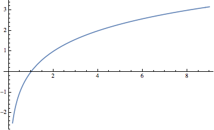

Ken Levasseur, Al Doerr, Michiel Smid, Oscar Levin, Charles M. Grinstead, J. Laurie Snell, Eric Lehman, F. Thomson Leighton, Albert R Meyer, Jeff Erickson, Kenneth P. Bogart, Carol Chritchlow, David Eck, OpenDSA Project, L.J. Miller
In this section we intend to examine a variety of recurrence relations that are not finite-order linear with constant coefficients. For each part of this section, we will consider a concrete example, present a solution, and, if possible, examine a more general form of the original relation.
Subsection16.2.1A First Basic Example
Consider the homogeneous first-order linear relation without constant coefficients, \(S(n)
- n S(n - 1) = 0\text{,}\)\(n \geq 1\text{,}\) with initial condition \(S(0)
= 1\text{.}\) Upon close examination of this relation, we see that the \(n\)th term is \(n\) times the \((n - 1)^{st}\) term, which is a property of \(n\) factorial. \(S(n)
= n!\) is a solution of this relation, for if \(n \geq 1\text{,}\)
In addition, since \(0! = 1\text{,}\) the initial condition is satisfied. It should be pointed out that from a computational point of view, our “solution” really isn't much of an improvement since the exact calculation of \(n!\) takes \(n-1\) multiplications.
If we examine a similar relation, \(G(k) - 2 ^k G(k - 1),\)\(k\geq 1\) with \(G(0)
= 1\text{,}\) a table of values for \(G\) suggests a possible solution:
The exponent of 2 in \(G(k)\) is growing according to the relation \(E(k) = E(k - 1) + k,\) with \(E(0) = 0\text{.}\) Thus \(E(k)=\frac{k(k+1)}{2}\) and \(G(k) = 2^{k(k+1)/2}\text{.}\) Note that \(G(k)\) could also be written as \(2^0
2^1 2^2 \cdots 2^k\text{,}\) for \(k \geq 0\text{,}\) but this is not a closed form expression.
In general, the relation \(P(n) = f(n)P(n - 1)\) for \(n \geq 1\) with \(P(0)
=f(0)\text{,}\) where \(f\) is a function that is defined for all \(n\geq
0\text{,}\) has the “solution”
This product form of \(P(n)\) is not a closed form expression because as \(n\) grows, the number of multiplications grow. Thus, it is really not a true solution. Often, as for \(G(k)\) above, a closed form expression can be derived from the product form.
Subsection16.2.2An Analysis of the Binary Search Algorithm
Suppose you intend to use a binary search algorithm (see Subsection 9.2.2) on lists of zero or more sorted items, and that the items are stored in an array, so that you have easy access to each item. A natural question to ask is “How much time will it take to complete the search?” When a question like this is asked, the time we refer to is often the so-called worst-case time. That is, if we were to search through \(n\) items, what is the longest amount of time that we will need to complete the search? In order to make an analysis such as this independent of the computer to be used, time is measured by counting the number of steps that are executed. Each step (or sequence of steps) is assigned an absolute time, or weight; therefore, our answer will not be in seconds, but in absolute time units. If the steps in two different algorithms are assigned weights that are consistent, then analyses of the algorithms can be used to compare their relative efficiencies. There are two major steps that must be executed in a call of the binary search algorithm:
If the lower index is less than or equal to the upper index, then the middle of the list is located and its key is compared to the value that you are searching for.
In the worst case, the algorithm must be executed with a list that is roughly half as large as in the previous execution. If we assume that Step 1 takes one time unit and \(T(n)\) is the worst-case time for a list of \(n\) items, then
even though the conditions of Step 1 must be evaluated as false if \(n
= 0\text{.}\) You might wonder why \(n/2\) is truncated in (16.2.1). If \(n\) is odd, then \(n = 2
k + 1\) for some \(k\geq 0\text{,}\) the middle of the list will be the \((k
+ 1)^{st}\) item, and no matter what half of the list the search is directed to, the reduced list will have \(k = \lfloor n/2\rfloor\) items. On the other hand, if \(n\) is even, then \(n
= 2 k\) for \(k>0\text{.}\) The middle of the list will be the \(k^{th}\) item, and the worst case will occur if we are directed to the \(k\) items that come after the middle (the \((k + 1)^{st}\) through \((2k)^{th}\) items). Again the reduced list has \(\lfloor n/2 \rfloor\) items.
Solution to (16.2.1) and (16.2.2). To determine \(T(n)\text{,}\) the easiest case is when \(n\) is a power of two. If we compute \(T \left(2^m\right)\text{,}\)\(m\geq
0\) , by iteration, our results are
The pattern that is established makes it clear that \(T\left(2^m\right)
= m + 1\text{.}\) This result would seem to indicate that every time you double the size of your list, the search time increases by only one unit.
A more complete solution can be obtained if we represent \(n\) in binary form. For each \(n\geq 1\text{,}\) there exists a non-negative integer \(r\) such that
\begin{gather}
\quad \quad 2^{r-1}\leq n < 2^r\tag{16.2.3}
\end{gather}
For example, if \(n = 21\text{,}\)\(2^4 \leq 21 < 2^5\text{;}\) therefore, \(r = 5\text{.}\) If \(n\) satisfies \(16.2.3), its binary representation requires \(r\) digits. For example, \(21_{\text{ten}}\) = \(10101_{\textrm{two}}\text{.}\)
In general, \(n = \left(a_1a_2\ldots a_r\right)_{\textrm{two}}\text{.}\) where \(a_1=1\text{.}\) Note that in this form, \(\lfloor n/2\rfloor\) is easy to describe: it is the \(r-1\) digit binary number \(\left(a_1a_2\ldots a_{r-1}\right)_{\textrm{two}}\)
From the pattern that we've just established, \(T(n)\) reduces to \(r\text{.}\) A formal inductive proof of this statement is possible. However, we expect that most readers would be satisfied with the argument above. Any skeptics are invited to provide the inductive proof.
For those who prefer to see a numeric example, suppose \(n = 21\text{.}\)
Our general conclusion is that the solution to (16.2.1) and (16.2.2) is that for \(n\geq 1\text{,}\)\(T(n) = r\text{,}\) where \(2^{r-1}\leq n < 2^r\text{.}\)
A less cumbersome statement of this fact is that \(T(n)=\left\lfloor
\log_{2}n\right\rfloor +1\text{.}\) For example, \(T(21) = \left\lfloor \log_2
21\right\rfloor + 1 = 4 + 1 = 5\text{.}\)
Subsubsection16.2.2.1Review of Logarithms
Any discussion of logarithms must start by establishing a base, which can be any positive number other than 1. With the exception of Theorem 5, our base will be 2. We will see that the use of a different base (10 and \(e\approx 2.171828\) are the other common ones) only has the effect of multiplying each logarithm by a constant. Therefore, the base that you use really isn't very important. Our choice of base 2 logarithms is convenient for the problems that we are considering.
Definition16.2.1.Base 2 logarithm.
The base 2 logarithm of a positive number represents an exponent and is defined by the following equivalence for any positive real numbers \(a\text{.}\)
\begin{equation*}
\log_2
a = x \quad \Leftrightarrow \quad 2^x= a\text{.}
\end{equation*}

Figure16.2.2.Plot of the logarithm, bases 2, function
For example, \(\log_2 8 = 3\) because \(2^3 = 8\) and \(\log_21.414\approx 0.5\) because \(2^{0.5}\approx 1.414\text{.}\) A graph of the function \(f(x)
= \log_2 x\) in Figure 16.2.2 shows that if \(a
< b\text{,}\) the \(\log_2a < \log_2 b\text{;}\) that is, when \(x\) increases, \(\log_2
x\) also increases. However, if we move \(x\) from \(2^{10} = 1024\) to \(2^{11}
= 2048\text{,}\)\(\log_2 x\) only increases from 10 to 11. This slow rate of increase of the logarithm function is an important point to remember. An algorithm acting on \(n\) pieces of data that can be executed in \(\log_2{n}\) time units can handle significantly larger sets of data than an algorithm that can be executed in \(n/100\) or \(\sqrt{n}\) time units. The graph of \(T(n)=\left\lfloor
\log_2n\right\rfloor +1\) would show the same behavior.
A few more properties that we will use in subsequent discussions involving logarithms are summarized in the following theorem.
Theorem16.2.3.Fundamental Properties of Logarithms.
Let \(a\) and \(b\) be positive real numbers, and \(r\) a real number.
\begin{gather}
\log_2 1 = 0\tag{16.2.4}\\
\log_2 a b = \log_2a + \log_2b\tag{16.2.5}\\
\log_2 \frac{a}{b}= \log_2a - \log_2b\tag{16.2.6}\\
\log_2a^r = r \log_2a\tag{16.2.7}\\
2^{\log_2a}= a\tag{16.2.8}
\end{gather}
Definition16.2.4.Logarithms base \(b\).
If \(b > 0\text{,}\)\(b \neq 1\text{,}\) then for \(a>0\text{,}\)
\begin{equation*}
\log_b a =
x\Leftrightarrow b^x= a
\end{equation*}
Theorem16.2.5.How logarithms with different bases are related.
Let \(b>0\text{,}\)\(b \neq 1\text{.}\) Then for all \(a >0\text{,}\)\(\log_b a =
\frac{\log_2a}{\log_2b}\text{.}\) Therefore, if \(b > 1\text{,}\) base b logarithms can be computed from base 2 logarithms by dividing by the positive scaling factor \(\log_2b\text{.}\) If \(b < 1\text{,}\) this scaling factor is negative.
By an analogue of (16.2.8), \(a=b^{\log_b a}\text{.}\) Therefore, if we take the base 2 logarithm of both sides of this equality we get:
\begin{equation*}
\log_2 a = \log_2 \left(b^{\log_b a}\right) \Rightarrow \log_2 a
=\log_b a \cdot \log_2 b
\end{equation*}
Finally, divide both sides of the last equation by \(\log_2b\text{.}\)
Note16.2.6.
\(\log_210 \approx 3.32192\) and \(\log_2e = 1.55269\text{.}\)
Returning to the binary search algorithm, we can derive the final expression for \(T(n)\) using the properties of logarithms, including that the logarithm function is increasing so that inequalities are maintained when taking logarithms of numbers.
If the time that was assigned to Step 1 of the binary search algorithm is changed, we wouldn't expect the form of the solution to be very different. If \(T(n)= a + T
(\lfloor n/2 \rfloor )\) with \(T(0) = c\text{,}\) then \(T(n) = c + a \left\lfloor
\log_2{2n}\right\rfloor\text{.}\)
A further generalization would be to add a coefficient to \(T(\lfloor n/2 \rfloor )\) : \(T(n)= a + b T (\lfloor n/2 \rfloor )\) with \(T(0) = c\text{,}\) where \(a, b,
c\in \mathbb{R}\text{,}\) and \(b\neq 0\) is not quite as simple to derive. First, if we consider values of \(n\) that are powers of 2:
\begin{equation*}
\begin{array}{c}
T(1) = a + b T(0) = a + b c\\
T(2)=a + b(a+b c) = a + a b +c b^2\\
T(4)=a+b\left(a + a b +c b^2\right) = a + a b + a b^2+ c b^3\\
\vdots \\
T\left(2^r\right) = a + a b + a b^2+\cdots + a b^r + c b^{r+1}
\end{array}
\end{equation*}
If \(n\) is not a power of 2, by reasoning that is identical to what we used to (16.2.1) and (16.2.2),
\begin{equation*}
T(n) =\sum_{k=0}^r a b^k+ c b^{r+1}
\end{equation*}
where \(r
= \left\lfloor \log_2n\right\rfloor\text{.}\)
The first term of this expression is a geometric sum, which can be written in closed form. Let \(x\) be that sum:
\begin{equation*}
\begin{array}{c}
x =a + a b + a b^2+\cdots + a b^r \\
b x= \textrm{ }a b + a b^2+\cdots + a b^r + a b^{r+1}
\end{array}
\end{equation*}
We've multiplied each term of \(x\) by \(b\) and aligned the identical terms in \(x\) and \(bx\text{.}\) Now if we subtract the two equations,
\begin{equation*}
x - b x = a -
a b ^{r+1} \Rightarrow x(1-b) = a\left(1-b^{r+1}\right)
\end{equation*}
Subsection16.2.3Analysis of Bubble Sort and Merge Sort
The efficiency of any search algorithm such as the binary search relies on fact that the search list is sorted according to a key value and that the search is based on the key value. There are several methods for sorting a list. One example is the bubble sort. You might be familiar with this one since it is a popular “first sorting algorithm.” A time analysis of the algorithm shows that if \(B(n)\) is the worst-case time needed to complete the bubble sort on \(n\) items, then \(B(n) =(n-1) + B(n-1)\) and \(B(1)
= 0\text{.}\) The solution of this relation is a quadratic function \(B(n)
=\frac{1}{2}\left(n^2-n\right)\text{.}\) The growth rate of a quadratic function such as this one is controlled by its squared term. Any other terms are dwarfed by it as \(n\) gets large. For the bubble sort, this means that if we double the size of the list that we are to sort, \(n\) changes to \(2n\) and so \(n^2\) becomes \(4n^2\) . Therefore, the time needed to do a bubble sort is quadrupled. One alternative to bubble sort is the merge sort. Here is a simple version of this algorithm for sorting \(F=\{r(1),
r(2), \ldots , r(n)\}\text{,}\)\(n \geq 1\text{.}\) If \(n
= 1\text{,}\) the list is sorted trivially. If \(n\geq 2\) then:
Divide \(F\) into \(F_1= \{r(1), \ldots , r(\lfloor n/2\rfloor )\}\) and \(F_2= \{r(\lfloor n/2\rfloor +1), \ldots ,r(n)\}\text{.}\)
Sort \(F_1\) and \(F_2\) using a merge sort.
Merge the sorted lists \(F_1\) and \(F_2\) into one sorted list. If the sort is to be done in descending order of key values, you continue to choose the higher key value from the fronts of \(F_1\) and \(F_2\) and place them in the back of \(F\text{.}\)
Note that \(F_1\) will always have \(\lfloor n/2\rfloor\) items and \(F_2\) will have \(\lceil n/2\rceil\) items; thus, if \(n\) is odd, \(F_2\) gets one more item than \(F_1\text{.}\) We will assume that the time required to perform Step 1 of the algorithm is insignificant compared to the other steps; therefore, we will assign a time value of zero to this step. Step 3 requires roughly \(n\) comparisons and \(n\) movements of items from \(F_1\) and \(F_2\) to \(F\text{;}\) thus, its time is proportional to \(n\text{.}\) For this reason, we will assume that Step 3 takes \(n\) time units. Since Step 2 requires \(T(\lfloor n/2\rfloor ) + T(\lceil n/2\rceil )\) time units,
Instead of an exact solution of these equations, we will be content with an estimate for \(T(n)\text{.}\) First, consider the case of \(n=2^r\text{,}\)\(r \geq 1\text{:}\)
Thus, if \(n\) is a power of 2, \(T(n) = n \log_2 n\text{.}\) Now if, for some \(r \geq 2\) , \(2^{r-1}\leq n\leq 2^r\text{,}\) then \((r-1)2^{r-1}\leq
T(n) < r 2^r\text{.}\) This can be proved by induction on \(r\text{.}\) As \(n\) increases from \(2^{r-1}\) to \(2^r\text{,}\)\(T(n)\) increases from \((r-1)2^{r-1}\) to \(r 2^r\) and is slightly larger than \(\left\lfloor n \log_2n\right\rfloor\text{.}\) The discrepancy is small enough so that \(T_e(n)=\left\lfloor n \log
_2n\right\rfloor\) can be considered a solution of (16.2.9) and (16.2.10) for the purposes of comparing the merge sort with other algorithms. Table 16.2.7 compares \(B(n)\) with \(T_e(n)\) for selected values of \(n\text{.}\)
Table16.2.7.Comparison of Times for Bubble Sort and Merge Sort
n
\(B(n)\)
\(T_e(n)\)
10
45
34
50
1225
283
100
4950
665
500
124750
4483
1000
499500
9966
Subsection16.2.4Derangements
A derangement is a permutation on a set that has no “fixed points”. Here is a formal definition:
Definition16.2.8.Derangement.
A derangement of a nonempty set \(A\) is a permutation of \(A\) (i.e., a bijection from \(A\) into \(A\)) such that \(f(a)\neq a\) for all \(a
\in A\text{.}\)
If \(A = \{1, 2, . . . , n\}\text{,}\) an interesting question might be “How many derangements are there of \(A\text{?}\)” We know that our answer is bounded above by \(n!\text{.}\) We can also expect our answer to be quite a bit smaller than \(n!\) since \(n\) is the image of itself for \((n-1)!\) of the permutations of \(A\text{.}\)
Let \(D(n)\) be the number of derangements of \(\{1, 2, . . . , n\}\text{.}\) Our answer will come from discovering a recurrence relation on \(D\text{.}\) Suppose that \(n \geq 3\text{.}\) If we are to construct a derangement of \(\{1, 2, \dots , n\}\text{,}\)\(f\text{,}\) then \(f(n)
= k \neq n\text{.}\) Thus, the image of \(n\) can be selected in \(n-1\) different ways. No matter which of the \(n -1\) choices we make, we can complete the definition of \(f\) in one of two ways. First, we can decide to make \(f(k) = n\text{,}\) leaving \(D(n
-2)\) ways of completing the definition of \(f\text{,}\) since \(f\) will be a derangement of \(\{1, 2, \dots ,n\} - \{n, k\}\text{.}\) Second, if we decide to select \(f(k)\neq
n\text{,}\) each of the \(D(n - 1)\) derangements of \(\{1, 2,\dots ,n-1\}\) can be used to define \(f\text{.}\) If \(g\) is a derangement of \(\{1, 2, \dots , n-1\}\) such that \(g(p) = k\text{,}\) then define f by
\begin{equation*}
f(j)=\left\{
\begin{array}{cc}
n & \textrm{ if } j = p \\
k & \textrm{ if } j = n \\
g(j) & \textrm{ otherwise } \\
\end{array}
\right.
\end{equation*}
Note that with our second construction of \(f\text{,}\)\(f(f(n)) = f(k) \neq n\text{,}\) while in the first construction, \(f(f(n)) = f(k) = n\text{.}\) Therefore, no derangement of \(\{1,
2, . . . , n\}\) with \(f(n) = k\) can be constructed by both methods.
To recap our result, we see that \(f\) is determined by first choosing one of \(n - 1\) images of \(n\) and then constructing the remainder of \(f\) in one of \(D(n - 2)
+ D(n -1)\) ways. Therefore,
This homogeneous second-order linear relation with variable coefficients, together with the initial conditions \(D(1) = 0\) and \(D(2) = 1\text{,}\) completely defines \(D\text{.}\) Instead of deriving a solution of this relation by analytical methods, we will give an empirical derivation of an approximation of \(D(n)\text{.}\) Since the derangements of \(\{1,2
. . . , n\}\) are drawn from a pool of \(n!\) permutations, we will see what percentage of these permutations are derangements by listing the values of \(n!\text{,}\)\(D(n)\text{,}\) and \(\frac{D(n)}{n!}\text{.}\) The results we observe will indicate that as \(n\) grows, \(\frac{D(n)}{n!}\) hardly changes at all. If this quotient is computed to eight decimal places, for \(n \geq 12\text{,}\)\(D(n)/n!
= 0.36787944\text{.}\) The reciprocal of this number, which \(D(n)/n!\) seems to be tending toward, is, to eight places, 2.7182818. This number appears in so many places in mathematics that it has its own name, \(e\text{.}\) An approximate solution of our recurrence relation on \(D\) is then \(D(n)\approx \frac{n!}{e}\text{.}\)
Exercises16.2.5Exercises
1.
Solve the following recurrence relations. Indicate whether your solution is an improvement over iteration.
Prove that if \(n \geq 0\text{,}\)\(\lfloor n/2\rfloor +\lceil n/2\rceil = n\text{.}\) (Hint: Consider the cases of \(n\) odd and \(n\) even separately.)
Prove by induction that if \(T(n)= 1 + T (\lfloor n/2 \rfloor )\text{,}\)\(T(0) =
0\text{,}\) and \(2^{r-1}\leq n < 2^r\) , \(r \geq 1\text{,}\) then \(T(n) = r\) .
Use the substitution \(S(n) = T(n + 1)/T(n)\) to solve \(T(n)T(n-2)-T(n)^2=1\) for \(n \geq 2\text{,}\) with \(T(0) = 1\text{,}\)\(T(1) = 6\text{,}\) and \(T(n) \geq 0\) .
The indicated substitution yields \(S(n)=S(n+1)\text{.}\) Since \(S(0)=T(1)/T(0)=6\) , \(S(n)=6\) for all \(n\text{.}\) Therefore \(T(n+1)=6T(n)\Rightarrow T(n)=6^n\) .
6.
Use the substitution \(G(n) =T(n)^2\) to solve \(T(n)^2-T(n-1)^2=1\) for \(n
\geq 1\text{,}\) with \(T(0) = 10\text{.}\)
A good approximation to the solution of this recurrence relation is based on the following observation: \(n\) is a power of a power of two; that is, \(n\) is \(2^m\text{,}\) where \(m=2^k\) , then \(Q(n)=1+Q\left(2^{m/2}\right)\text{.}\) By applying this recurrence relation \(k\) times we obtain \(Q(n)=k\text{.}\) Going back to the original form of \(n\text{,}\)\(\log _2n=2^k\) or \(\log
_2\left(\log _2n\right)=k\text{.}\) We would expect that in general, \(Q(n)\) is \(\left\lfloor \log _2\left(\log
_2n\right)\right\rfloor\text{.}\) We do not see any elementary method for arriving at an exact solution.
Suppose that \(n\) is a positive integer with \(2^{k-1} \leq n
< 2^k\text{.}\) Then \(n\) can be written in binary form, \(\left(a_{k-1}a_{k-2}\cdots
a_2a_1a_0\right)_{\textrm{two}}\) with \(a_{k-1}=1\) and \(R(n)\) is equal to the sum \(\underset{i=0}{\overset{k-1}{\Sigma
}}\)\(\left(a_{k-1}a_{k-2}\cdots a_i\right)_{\textrm{two}}\text{.}\) If \(2^{k-1}\leq n < 2^k\text{,}\) then we can estimate this sum to be between \(2n-1\) and \(2n+1\text{.}\) Therefore, \(R(n)\approx 2n\) .
8.
Suppose Step 1 of the merge sort algorithm did take a significant amount of time. Assume it takes 0.1 time unit, independent of the value of \(n\text{.}\)
Write out a new recurrence relation for \(T(n)\) that takes this factor into account.
Solve for \(T\left(2^r\right)\text{,}\)\(r \geq 0\text{.}\)
Assuming the solution for powers of 2 is a good estimate for all \(n\text{,}\) compare your result to the solution in the text. As gets large, is there really much difference?